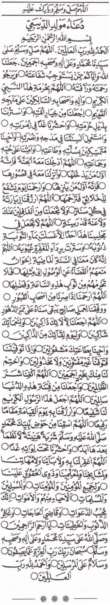

Ad-Diba'i
Bagian 1
Cover
Biografi Pengarang
Abdurrahman bin Ali bin Muhammad Ad Diba`i Asy Syaibaniy, Pengarang Maulid Diba`i ini lahir ketika ayahnya sedang bepergian, dan sampai akhir hayatnya beliau tidak pernah bertemu dengan ayahnya. Beliau diasuh oleh kakek dari ibunya yang bernama Syeikh Syarafuddin bin Muhammad Mubariz yang juga seorang ulama besar yang tersohor di kota Zabid saat itu. Meskipun demikian, ketiadaan sosok ayah tidak menjadi penghalang bagi Ibn Diba` untuk menuntut ilmu pada ulama-ulama besar Zabid.
Semenjak kecil, Ibn Diba` sudah sangat giat dalam menimba ilmu kepada para ulama. Beliau belajar membaca Al Quran dibawah bimbingan Syeikh Nuruddin Ali bin Abu Bakar lalu berpindah kepada mufti Zabid Syeikh Jamaluddin Muhammad Atthoyyib yang masih terhitung pamannya sendiri. Setelah gurunya melihat bakat kecerdasan istimewa yang dimiliki Ibn Diba`, maka sang Mufti menyuruhnya untuk membaca Al Quran dari awal hingga akhir. Berkat kecerdasan dan ketekunan, beliau sudah bisa menghafal Al Quran saat masih berusia sepuluh tahun. Tak lama setelah beliau berhasil menghatamkan Al Quran, Ibn Diba' mendengar berita duka bahwa ayahnya telah meninggal dunia di salah satu daerah di daratan India. Beliau mendapatkan harta warisan sebanyak 8 Dinar.
Meninggalnya ayah beliau tak memadamkan motivasi Ibn Diba` dalam menuntut ilmu, malah sebaliknya beliau makin semangat. Setelah peristiwa itu, beliau memutuskan untuk belajar ilmu Qiroat dengan mengaji Nadzom (bait) Syatibiyah dan juga mempelajari ilmu Bahasa (gramatika), Matematika, Faroidl, Fikih, dengan masih di bawah bimbingan pamannya. Atas arahan pamannya, beliau disuruh untuk mengaji kitab Zubad (nadlom Fiqh madzhab Syafi`i) kepada Syeikh Umar bin Muhammad Al Fata Al Asy`ari.
Kebiasaan dan Karya-karya Ibn Diba'
Beliau adalah salah seorang ulama ahli Hadis yang terkemuka pada abad ke-9 H. kehebatannya dalam bidang Hadis telah diakui oleh para ulama, sehingga banyak yang datang kepadanya untuk meminta sanad Hadis dan mendalami ilmu Hadis. Meskipun demikian, Hal itu tak membuatnya berbesar hati, tapi sebaliknya dia makin tawaddlu` (rendah hati).
Ibn Diba' mempunyai kebiasaan untuk membaca surat Al Fatihah dan menganjurkan kepada murid-murid dan orang sekitarnya untuk sering membaca surat Al Fatihah. Sehingga setiap orang yang datang menemui beliau harus membaca Fatihah sebelum mereka pulang. Hal ini tidak lain karena beliau pernah mendengar salah seorang gurunya pernah bermimpi, bahwa hari kiamat telah datang lalu dia mendengar suara, “ Wahai orang Yaman masuklah ke surga Allah.” Lalu orang-orang bertanya, “Kenapa orang-orang Yaman bisa masuk surga ?” Kemudian dijawab, "karena mereka sering membaca surat Al Fatihah".
Ibn Diba` termasuk ulama yang produktif dalam menulis. Hal ini terbukti beliau mempunyai banyak karangan baik di bidang Hadis ataupun Sejarah. Karyanya yang paling dikenal adalah syair-syair sanjungan (madah) atas Nabi Muhammad SAW. yang terkenal dengan sebutan Maulid Diba`i, Meskipun ada yang menisbatkan Maulid ini kepada Ibn Jauzi, hanya saja pendapat ini sangat lemah.
Di antara buah karyanya yang lain: Qurrotul `Uyun yang membahas tentang seputar Yaman, kitab Mi`roj, Taisiirul Usul, Bughyatul Mustafid dan beberapa bait syair. Beliau mengabdikan dirinya hinga akhir hayatnya sebagai pengajar dan pengarang kitab. Ibn Diba'i wafat di kota Zabid pada pagi hari Jumat, tanggal 26 Rajab, 944 H.
Maulid Ad-Diba'i Wahai purnama yang memiliki segala kesempurnaan Dengan ucapan apa bisa kuungkapkan kemuliaanmu Oleh: Abdurrahman bin Ali bin Muhammad bin Umar bin Ali bin Yusuf bin Ahmad bin Umar Ad Diba`i Asy Syaibaniy
Bagian 2

 Stop
Stop
C. Inna Fatahna + MP3

Artinya - Indonesia
(1) Sesungguhnya Kami telah
memberikan kepadamu kemenangan
yang nyata (2) Supaya Allah memberi
ampunan kepadamu terhadap dosamu yang
telah lalu dan yang akan datang serta
menyempurnakan nikmat-Nya atasmu dan
memimpin kamu kepada jalan yang lurus (3)
dan supaya Allah menolongmu dengan
pertolongan yang kuat (banyak).
(QS Al -Fat h 1-3)
(128) Sesungguhnya telah dat ang kepadamu,
utusan dari golonganmu. Dan sangat berat
baginya apa-apa yang menimpa kalian, dan
sangat menjaga kalian (Dari Kemurkaan Allah
dan Neraka), dan ia sangat lemah lembut serta
berkasih sayang atas orang-orang yang
beriman.
(129)Maka jika mereka ingkar, maka
katakanlah, “Cukuplah pertolongan Allah
bagiku, tiada Tuhan selain Dia, dan kepada-Nya aku berserah diri, dan Dialah Pemilik
„Arsy yang agung.”
(QS. At -Taubah; 128-129)
1. Alhamdulillahil Qowiyyil Ghalib + MP3

Artinya - Indonesia
Segala puji bagi Allah, Yang Mahakuat lagi Mahaperkasa (di atas
segala-galanya), Maha Pelindung lagi Penuntut segala dosa, Maha
Membangkitkan di hari kiamat, Mahakekal, Maha Penganugerah lagi
Maha Pelenyap sengsara, Maha Mengetahui segala keadaan; yang
nyata, yang musnah dan yang binasa.
Bertasbih kepada-Nya (semua) yang tenggelam, yang condong,
yang terbit dan yang terbenam. Semua makhluk yang berbicara dan
yang diam; mengesakan Allah. Demikian pula yang padat dan yang
cair.
Dengan keadilan-Nya, yang diam bisa bergerak; dan dengan
keutamaan-Nya, yang bergerak menjadi diam.
TIADA TUHAN SELAIN ALLAH
Yang Mahabijaksana, yang menciptakan keindahan hikmah-Nya
dan berbagai keajaiban dalam pengaturan susunan perwujudan
manusia ini. Dia menciptakan otak, tulang, bahu, pembuluh darah,
daging, kulit dan rambut dengan susunan yang teratur. Dari sperma
yang terpancar dari tulang sulbi laki-laki dan tulang rusuk
perempuan.
TIADA TUHAN SELAIN ALLAH
Mahamulialah Dzat Yang menghamparkan kemuliaan dan
anugerah untuk makhluk-Nya..... Setiap malam (Dia) “turun” ke langit dunia dan
memanggil, “Adakah orang yang memohon ampun
malam ini?? Adakah juga yang bertobat?? Adakah
orang yang tengah menuntut hajat, sehingga Aku memenuhi
hajatnya itu??”
Maka seandainya engkau lihat para hamba yang mengabdi
kepada Allah, yang berdiri tegak di atas telapak kakinya dengan
cucuran air mata, dan segolongan kaum yang menyesali dosa-dosanya serta bertobat, dan orang-orang yang ketakutan akan
berbuat dosa lagi seraya mencerca dirinya sendiri, dan orang yang
lari menghindar dari perbuatan-perbuatan dosa.
Tiada henti-hentinya mereka memohon ampunan, sehingga
berhari-hari lamanya meratapi rentetan kealpaannya. Kemudian
mereka kembali menekuni ibadah. Mereka benar-benar beruntung
dengan apa yang mereka cari, mendapati keridhaan Allah yang
dicintai, dan tiada seorang pun dari kaum tersebut yang kembali
dengan membawa kerugian.
TIADA TUHAN SELAIN ALLAH
Mahasuci dan Mahaluhur Allah, yang telah menciptakan nur
Muhammad “dari cahaya-Nya” sebelum menciptakanAdam dari
tanah liat. Dan Allah memperlihatkan keagungan nur Muhammad
kepada penghuni surga seraya berfirman, “Inilah pemimpin para
nabi yang paling agung di antara orang-orang pilihan, serta lebih
mulia di antara para kekasih Allah.”
2. Qiila Huwa Adam + MP3

Artinya - Indonesia
Ditanyakan oleh malaikat, “Apakah nur itu adalah Nabi Adam??”
Allah berfirman, “Dengan nur ini Aku anugerahkan martabat yang
tinggi kepada Nabi Adam.” Ditanyakan oleh malaikat, “Adakah nur
itu Nabi Nuh??” Allah berfirman, “Dengan nur ini, Nabi Nuh selamat
dari tenggelam, dan binasalah keluarga dan kerabat yang
menentangnya.”
Ditanyakan oleh malaikat, “Adakah nur itu Nabi Ibrahim??” Allah
berfirman, “Dengan nur ini Nabi Ibrahim sanggup menyampaikan
hujjahnya kepada para penyembah berhala dan bintang-bintang.”
Ditanyakan oleh malaikat, “Apakah nur itu adalah Nabi Musa??”
Allah berfirman, “Musa itu adalah saudaranya, tetapi nur ini adalah
kakasih (habiib), dan Musa adalah penerima firman Allah yang
berbicara secara langsung (kaliim wa mukhathib).”
Ditanyakan oleh malaikat, “Apakah nur itu Nabi Isa??” Allah
berfirman, “Dengan nur ini Nabi Isa membawa kabar gembira. Dan
jaraka antara dia dan kenabiannya sangat dekat, bagaikan mata dan
alis.”
Ditanyakan oleh malaikat, “Maka siapakah nur yang menjadi
kekasih nan mulia yang telah Engkau hiasi dengan keagungan,
Engkau anugerahi dengan mahkota kehebatan dan kemegahan,
serta Engkau kibarkan panji-panji di atas kepemimpinannya???”
Allah berfirman, “Dialah seorang nabi yang akan Aku pilih dari
keturunan Luayy bin Ghalib, yang ayah ibunya telah meninggal
dunia, kemudian diasuh oleh kakeknya, kemudian oleh pamannya,
yaitu saudara kandung ayahnya yang bernama Abu
Thalib.”
3. Yub`atsu Min

Artinya - Indonesia
Beliau diutus dari negeri Tihamah (Makkah) menjelang datangnya
hari kiamat. Pada punggung beliau terdapat tanda kenabian. Bila
berjalan senantiasa terlindungi awan yang siap mematuhi
perintahnya.
Kedua pelipisnya cemerlang bercahaya, rambutnya sepekat
malam gulita. Hidungnya mancung bagaikan huruf alif, bulat
mulutnya laksana huruf mim, dan lengkung keningnya laksana huruf
nun. Pendengarannya mampu mendengar guratan pena Lauhul
Mahfudz, penglihatannya menembus langit ke tujuh.
Kedua telapak kakinya dicium unta, hingga hilanglah rasa sakit
yang dideritanya. Kepada beliau biawak beriman, pepohonan
mengucap salam, babatuan berbicara dan batang pohon kurma
meratap bagaikan rintihan duka seorang pecinta.
Kedua tangannya menampakkan keberkahan pada makanan dan
minuman (yang disentuhnya). Hatinya tiada lalai dan tidur, karena
senantiasa berkhidmat dan mengingat Allah. Bila disakiti, beliau
selalu memaafkan dan tidak membalas dendam. Bila dihina, beliau
hanya diam tanpa menjawab.
Allah mengangkat beliau ke martabat yang paling
mulia dengan kendaraan yang belum pernah
ditunggangi siapapun, sebelum maupun sesudahnya.
Bahkan pada derajat golongan malaikat, ketinggian beliau melebihi
yang lain.
Maka ketika naik melintasi dan meninggalkan dua alam,
sampailah beliau ke suatu tempat yang tinggi yang jaraknya sekitar
dua busur panah dari Allah. “Maka Akulah yang menghibur dan
berbicara kepadanya…
4. Tsumma Arudduhu Minal 'Arsyi + MP3

Artinya - Indonesia
kemudian Aku mengembalikannya dari ‘Arsy, sebelum dingin
alas tidurnya, dan ia benar-benar telah memperoleh semua yang
diharapkannya.”
Maka ketika Tanah Suci Makkah telah dimuliakan karena
kemuliaan beliau, sang pembaharu, terbentanglah keleluasaan
menuju Makkah bagi jiwa-jiwa yang mencintainya, baik yang
berjalan kaki maupun yang berkendara.
5. Sholatullahi Maa Laahat Kawaakib + MP3

Artinya - Indoenesia
Selama cahaya bintang gemintang masih gemerlap, semoga
rahmat Allah senantiasa dilimpahkan kepada Nabi Muhammad, sang
pengendara unta terbaik.
Pengiring unta berdendang menyebut nama sang kekasih,
sementara untanya dengan gembira mengangguk-anggukkan
kepala mengikuti irama penunggangnya.
Tidakkah engkau melihat sang unta? Ayunan langkahnya semakin
cepat, seiring linangan air matanya yang semakin deras, bagai arak-arakan mega.
Semakin condong pula langkahnya karena gembira, dan rindu
pada kandang serta ladang penggembalaannya.
Maka biarkan, jangan kau tarik tali kekang atau menggiringnya,
karena kerinduan pada sang nabilah yang menariknya.
Tunjukkanlah kegembiraanmu sebagaimana sang unta
menunjukkannya. Karena jika tidak, sungguh engkau berdusta
dalam menempuh jalan cinta.
Perhatikan, inilah kota Aqiq yang telah tampak. Dan inilah kubah-kubah penduduk yang gemerlap menyilaukan.
Dan itulah kubah hijau, yang di dalamnya terdapat seorang nabi
yang cahayanya menyinari kegelapan.
Dan sungguh benar (janji) keridhaan Allah seiring pertemuan yang
makin dekat. Dan sungguh, kegembiraan telah
berdatangan dari segala penjuru.
Bisikkan ke dalam jiwa, “Temui sang kekasih dan
bergembiralah!” Hari ini tiada satu pun yang menjadi penghalang
kepada kekasih.
Bersenang-senanglah dengan sang kekasih dalam segala cita,
sungguh telah datang suka dan lenyaplah duka.
(Muhammad) sang nabi Allah adalah sebaik-baik makhluk, yang
memiliki pangkat dan derajat yang sangat tinggi.
Ia mempunyai kedudukan tinggi serta berbagai keluhuran. Ia juga
memiliki kemuliaan dan kisah hidup yang diabadikan.
Andai setiap hari kita berjalan kaki di atas tatapan, bukan
mengendarai punggung unta…
…dan andai kita beramal setiap saat, untuk memperingati
kelahiran sang Ahmad, pasti akan kita peroleh nur sang Nabi.
Setiap waktu selalu kumohonkan, agar rahmat Allah Al-Muhaimin
selalu tercurah untuk beliau, sepanjang bintang-bintang masih
bercahaya…
…yang merata jua kepada seluruh keluarga dan para sahabatnya,
serta semua keturunannya yang mulia.
6. Fasubhana Man Khassahu + MP3

Artinya - Indonesia
Maka Mahasucilah Allah, yang telah mengkhususkan Nabi
Muhammad saw. dengan pangkat dan martabat yang mulia. Aku
menyanjungkan pujian kepada-Nya, atas segala nikmat yang
dianugerahkan-Nya.
Dan aku bersaksi, tidak ada Tuhan selain Allah, Yang Maha Esa, lagi
tiada sekutu baginya, Penguasa timur dan barat. Dan aku bersaksi,
sesungguhnya junjungan kami Nabi Muhammad adalah hamba dan
utusan Allah, yang diutus kepada seluruh bangsa ‘ajam (non-Arab)
dan bangsa Arab.
Semoga rahmat Allah dan kesejahteraan-Nya senantiasa terlimpah
atas beliau, keluarga serta para sahabatnya, yang memiliki
peninggalan dan perilaku yang baik, dengan shalawat dan salam
yang kekal lagi merata, yang mana pembaca keduanya akan datang
kelak di hari kiamat tanpa merugi.
7. Awwalu Maa Nastaftihu + MP3

Artinya - Indonesia
Pertama-tama, kami memulai Maulid ini dengan mengemukakan
dua hadits yang dating dari nabi yang agung derajatnya, mulia
nasabnya, serta lurus perjalanan hidupnya.
Allah, Dzat Yang tak pernah terlepas dari sifat Maha Mendengar
lagi Maha Mengetahui, berfirman mengenai hak beliau,
“Sesungguhnya Allah dan para malaikatnya selalu bershalawat untuk
nabi. Wahai orang-orang yang beriman,
bershalawatlah untuk beliau dan ucapkan salam
8. Al Haditsul Awwal + MP3

Artinya - Indonesia
Hadits pertama, dari seseorang yang ilmunya seluas samudera,
bertutur denga nbahasa Al-Quran dan salah seorang ulama terkenal
pada masanya, yakni Sayyiduna Abdullah bin Abbas ra., dari
Rasulullah saw., beliau bersabda,
“Sesungguhnya ada seorang Quraisy, yang ketika itu masih
berwujud cahaya (nur) di hadapan Allah Yang Mahaperkasa lagi
Mahaagung, dua ribu tahun sebelumpenciptaan Nabi Adam as.,
yang selalu bertasbih kepada Allah. Dan, bersamaan dengan
tasbihnya, bertasbih pula para malaikat mengikutinya.” Ketika Allah
menciptakan Adam, nur itu pun diletakkan pada tanah liat asal
kejadian Adam.
Nabi saw. bersabda, “…lalu Allah ‘Azza wa Jalla menurunkan nur
itu ke bumi melalui punggung Nabi Adam.. Dan Allah membawaku
ke dalam kapal dalam tulang sulbi (pinggang) Nabi Nuh dan
menjadikan aku dalam tulang sulbi sang kekasih, Nabi Ibrahim,
ketika ia dilemparkan ke dalam api..
Tak henti-hentinya Allah, Yang Mahaperkasa dan Mahaagung,
memindahkanku dari rangkaian tulang sulbi yang suci, kepada rahim
yang suci dan megah, hingga akhirnya Allah melahirkan aku melalui
kedua orangtuaku yang sama sekali tidak pernah berbuat serong.”
9. Al Haditsus Tsaani + MP3

Artinya - Indonesia
Hadits kedua, dari ‘Atha bin Yasar dari Ka’ab Al-Akhbar, ia berkata,
“Ayahku telah mengajarkan kepadaku kitab Taurat hingga tamat,
kecuali satu lembar yang tidak diajarkan dan justru dimasukkannya
ke dalam peti…”
“Maka ketika ayahku meninggal, aku membuka peti itu, ternyata
lembar tersebut bertuliskan;
Seorang nabi akan muncul di akhir zaman, tempat kelahirannya di
Makkah, hijrahnya ke Madinah dan pemerintahannya meluas
sampai ke negeri Syam..”
Beliau mencukur rambutnya dan berkain pada pinggangnya. Beliau
adalah sebaik-baik nabi dan umatnya adalah sebaik-baik umat.
Mereka bertakbir mengagungkan kebesaran Allah Ta’ala di setiap
tempat yang mulia. Mereka berbaris pada waktu shalat
sebagaimana barisan di medan perang.
Hati mereka adalah kitab sucinya. Mereka memuji Allah dalam
keadaan suka maupun duka.
Sepertiga di antara mereka masuk surga tanpa dihisab
(Ya Allah, jadikan kami di antara mereka)
Sepertiga lagi datang dengan dosa-dosanya, lalu
diampuni. Dan sepertiga lainnya datang dengan dosa
dan kesalahan besar.
Allah Ta’ala pun berfirman kepada malaikat, “Pergilah dan
timbanglah amal perbuatan mereka.”
Lalu para malaikat berkata, “Wahai Tuhan kami, selain mereka
telah bersaksi bahwa tiada Tuhan selain Allah dan Muhammad
adalah utusan-Nya, tiada yang kami dapati dari mereka kecuali telah
melampaui batas dalam menyia-nyiakan diri sendiri, dan dosa-dosa
mereka yang sebesar gunung.”
10. Fa Yaquulul Haqqu Wa `Izzatii + MP3

Artinya - Indonesia
Maka Allah berfirman, “Demi keagungan dan kebesaran-Ku,
tidaklah Aku jadikan orang yang tulus ikhlas bersaksi kepada-Ku
seperti orang yang mendustakan Aku. Masukkan mereka ke dalam
surga dengan rahmat-Ku.”
Wahai manusia termulia yang laksana untaian mutiara, wahai
intisari permata rahasia keberadaan, orang yang memujimu akan
selalu merasa kurang walaupun telah mengerahkan seluruh
kekuatan.
Dan orang yang mengabarkan sifatmu merasa tak akan sanggup
melukiskan perilakumu yang mulia dan pemurah. Semua yang ada
mengisyaratkan bahwa engkaulah yang menjadi tujuan, wahai orang
termulia yang telah memperoleh kedudukan terpuji.
Dan meskipun para rasul telah datang sebelum engkau, mereka
justru bersaksi tentang kemuliaan dan keluhuranmu.
11. Ahdhiruu Quluubakum

Artinya - Indonesia
Mantapkanlah hati kalian, wahai golongan orang berakal. Sehingga
aku jelaskan kepada kalian sifat-sifat baik sang kekasih agung, yang
telah ditetapkan dengan sebutan julukan termulia, yang pernah naik
menghadap ke hadirat Sang Maharaja Yang Maha Pemberi, sehingga
dapat melihat ke-Maha Indahan-Nya tanpa tutup dan tanpa tirai.
Tatkala purnama kerasulan hamper tiba di langit keagungan,
keluarlah perintah Allah Yang Mahaagung kepada sang juru warta
kerajaan langit, yakni malaikat Jibril. “Wahai Jibril, serukan kepada
seluruh makhluk penghuni bumi dan langit agar menyambutnya
dengan riang gembira..
..karena sesungguhnya cahaya yang terpelihara dan rahasia yang
tersimpan yang Aku ciptakan sebelum adanya sesuatu dan sebelum
terciptanya bumi dan langit, malam ini Aku pindahkan ke dalam
perut ibunya dengan penuh kegembiraan, yang dengannya
Kupenuhi ala mini dengan cahaya..
Kupelihara ketika dalam keadaan yatim piatu, dan Aku
menyucikannya beserta keluarganya dengan sesuci-sucinya.”
12. FaHtazzal `Arsyu + MP3

Artinya - Indonesia
Maka ‘Arsy pun berguncang penuh suka cita dan riang gembira.
Sementara itu “kursi” Allah bertambah wibawa dan tenang. Langit
dipenuhi berjuta cahaya dan bergemuruhlah suara malaikat
membaca tahlil, tamjid (pengangungan) dan istighfar.
(Mahasuci Allah, segala puji bagi Allah, tiada Tuhan selain Allah,
Allah Mahabesar) 3x
Dan sang ibunda tiada henti melihat bermacam tanda kemegahan
dan keistimewaan sang janin, hingga sempurnalah masa
kandungannya. Maka ketika sang bunda telah merasa kesakitan,
dengan izin Tuhan, Sang Pencipta makhluk, lahirlah kekasih Allah,
Muhammad saw., dalam keadaan bersujud, bersyukur dan memuji,
dengan wajah sempurna laksana purnama…
13. Mahaalul Qiyaam


Artinya - Indonesia
Artinya
14. Wawulida Shollallahu `Alaihi Wasallama

Artinya - Indonesia + MP3
Dengan keindahannya, padang gurun yang luas pun
tersinarkan. Dengan cahayanya, semesta pun menjadi terang
benderang. Dan makhluk-makhluk setelahnya pun segera masuk
dalam ikatan bai’atnya, sebagaiman makhluk-makhluk terdahulu
pernah memasukinya.
Mu’jizat agung pertamanya adalah padamnya api sesembahan di
negeri Persia, bersamaan dengan runtuhnya gedung-gedung
kehormatannya.
Dan dilemparnya setan-setan dari langit dengan bintang-bintang
yang membakar. Seketika, semua raja jin yang dengan angkuh
menguasai kerajaannya menjadi hina dan tunduk.
(Semua itu terjadi) ketika cahaya Muhammad yang cemerlang
memancar. Dan menjadi teranglah semesta raya dengan keindahan
cahayanya yang gemerlap, sampai tiba waktunya nabi diserahkan
kepada wanita yang menyusui.
15. Qiila Man Yakfulu + MP3

Artinya - Indonesia
Diserukan, “Siapakah yang mau mengasuh anak yatim bak
permata yang tiada banding kemahalan harganya ini?” Berkatalah
sekelompok burung, “Kamilah yang sanggup mengasuh dan
berharap dapat mengambil keuntungan cita-citanya yang agung.”
Binatang-binatang liar pun menyahut, “Kamilah yang lebih
berhak mengasuhnya agar memperoleh kemuliaan dan
keagungannya.”
Diserukan lagi, “Tenanglah kalian, wahai golongan umat.
Sesungguhnya Allah telah memutuskan sejak zaman dahulu kala
bahwasanya Nabi Muhammad saw. akan menyusu kepada seorang
wanita yang penuh kasih saying bernama Siti Halimah.”
16.. Tsumma a`Rodho `Anhu

Artinya - Indonesia
Kemudian berpalinglah para wanita yang biasa menyusui bayi-bayi dari Nabi Muhammad sw., karena suratan takdir memang telah
menentukan. Kebahagiaan bagi Halimah binti Abi Dzuaib. Tatkala
pandangan Halimah tertuju kepada Nabi, segera saja ia meraih bayi
itu, meletakkannya ke pangkuannya dan mendekapnya ke dadanya.
Sang jabang bayi menampakkan kegembiraan dan senyuman
kepadanya. Lalu dari gigi depannya cahaya memancar hingga
menembus langit. Kemudian nabi pun dibawa Halimah menuju
tunggangannya.
Lalu mereka berangkat menuju ke kampung
halamannya. Ketika Halimah dan nabi tiba di tempat
... tampaklah keberkahan sang nabi atas kambing-kambing ternaknya. Dan setiap hari Halimah melihat
tanda-tanda yang luar biasa dari diri nabi.
Meningkatnya taraf kehidupan dan kedudukan Halimah, sehingga
nabi pun semakin mendapat kasih sayang dan perlindungannya,
serta dapat bergaul bebas dengan anak-anak asuhnya.
17. Fa Bainal Habiibu + MP3

Artinya - Indonesia
Suatu hari, ketika nabi sedang bermain di suatu tempat yang
cukup jauh dari tempat tinggalnya, tiba-tiba datanglah tiga orang
berwajah laksana matahari dan rembulan.
Anak-anak pun berlarian ketakutan, sedangkan Nabi saw. tetap
diam keheranan.
Kemudian tiga orang itu membaringkan Nabi di atas tanah dengan
perlahan, lalu membedah dada nabi dengan lembut, kemudian
mengeluarkan hati sang penghulu umat manusia.
Mereka melapangkan hati itu dengan kebajikan, membuang
tempat setan bersemayam dan mengisinya dengan ketabahan, ilmu
pengetahuan, keyakinan dan keridhaan.
Lalu mereka mengembalikan hati sang Nabi ke tempat
asalnya, dan nabi pun kembali pulih seperti sediakala.
18. Faqoolatil Malaaikatu

Artinya - Indonesia
Kemudian salah satu malaikat itu berkata, “Wahai kekasih Dzat
Yang Maha Pengasih, andai engkau mengetahui kebaikan yang
hendak Allah anugerahkan kepadamu, tentu engkau akan
mengetahui ketinggian derajatmu di atas yang lain, dan engkau akan
bertambah gembira, bersuka cita, elok nan bercahaya.
Wahai Muhammad, bergembiralah! Karena keluasan ilmumu
sungguh telah diberitakan di alam raya, dan semua makhluk
menyambut gembira kehadiranmu.
Tak satu pun makhluk Allah yang tidak tunduk dan patuh
kepadamu serta mendengarkan sabda-sabdamu.
Akan datang kepadamu unta yang mohon keselamatan, dan
biawak serta kijang bersaksi akan kebenaran risalahmu. Pohon,
rembulan dan serigala juga mengakui kenabianmu dalam waktu
yang dekat.
Kendaraanmu, Buraq, yang selalu merindukan keindahanmu, serta
Malaikat Jibril, yang menjadi pembimbing kerajaanmu, telah
mengumandangkan sebutan namamu di seluruh penjuru dunia.
Rembulan pun akan mengikuti perintahmu, menjadi terbelah dua,
sebagai bukti mukjizatmu, “Dan setiap orang di jagat
raya merindukan kelahiranmu, serta menantikan
19. Fa Bainal Habiibu Saw Munshitun

Artinya - Indonesia
Ketika sang kekasih Allah itu tengah mendengarkan berita
malaikat dengan penuh perhatian dan wajahnya tampak berseri-seri
bagaikan sinar di pagi hari, tiba-tiba Halimah menjemputnya sambil
memanggil..
Ia berseru, “Wahai anakku yang jauh di sana..” Malaikat pun
menyahut, “Wahai Muhammad, engkau tidaklah jauh, bahkan
engkau sangat dekat dengan Allah, engkaulah pilihan dan kekasih-Nya.”
Halimah kembali berseru, “Wahai anakku yang sendirian..”
Malaikat menyahutinya, “Wahai Muhammad, engkau tidak
sendirian, bahkan engkaulah orang yang mempunyai pengukuhan.
Penghiburmu adalah Dzat Yang Maha Terpuji lagi Mahaagung. Dan
teman-temanmu adalah saudara-saudaramu yang terdiri dari para
malaikat dan ahli tauhid.”
Halimah berseru lagi, “Wahai anak yatim..” Malaikat pun kembali
menyahut, “Kebaikan Allah selalu diberikan kepadamu sebagai anak
yatim. Sungguh kedudukanmu di sisi Allah sangat agung.”
20. Falamma Roathul Haliimah

Artinya - Indonesia
Ketika Halimah melihat sang Nabi dalam keadaan selamat dari
marabahaya, dengan gembira ia mengajaknya pulang ke rumah.
Kemudian Halimah menceritakan kejadian itu kepada sebagian
peramal dengan mengulang-ulang cerita tersebut kembali.
Kemudian sang peramal bertanya kepada Nabi, “Wahai anak dari
negeri Sumur Zamzam, Maqam Ibrahim, Rukun Yamani dan Baitul
haram, apakah engkau menyaksikannya dalam keadaan jaga
ataukah tidur?”
Nabi menjawab, “Demi kehormatan Raja Yang Maha Mengetahui,
aku menyaksikan para malaikat itu dalam keadaan terjaga. Dan aku
tidak meragukan kejadian itu dan tidak pula mataku saat itu
terhalang.”
Sang peramal itu pun berkata, “Bergembiralah engkau Nak.
Engkaulah pembawa panji-panji kemenangan. Kenabianmu menjadi
kunci penutup para nabi. Malaikat Jibril akan dating kepadamu.
Dan di atas hamparan alas yang suci akan engkau peroleh firman
Tuhan, Yang Mahaagung. Tiada seorang pun yang dapat menghitung
keutamaan yang meliputi dirimu. Untuk menguraikan sebagian dari
sifatmu, lidah yang fasih pun tak lagi mampu.”
21. Ahsanan Nasi Khuluqan Wa Khalqa + MP3

Artinya - Indonesia
Nabi Muhammad adalah sebaik-baik manusia dalam penciptaan
dan budi pekerti, dan orang yang paling suka memberi petunjuk ke
jalan yang benar.
Budi pekertinya adalah Al-Quran, tabiatnya adalah pengampunan,
pemberi nasihat kepada manusia dan gemar berbuat baik.
Ia selalu memaafkan kesalahanmu jika berkaitan dengan haknya.
Namun jika hak Allah yang dilanggar, tak seorang pun sanggup
berdiri menentang kemarahannya.
Siapa pun melihatnya, meski sepintas akan segan, dan jika orang
miskin mengundangnya tentu didatanginya.
Beliau selalu mengatakan kebenaran walaupun terasa pahit, dan
tidak pernah menyimpan rahasia hati, menipu serta membahayakan
orang-orang Islam.
Siapa pun yang melihat wajahnya akan segera tahu bahwa beliau
bukanlah seorang penipu. Beliau bukan pula seorang pengumpat
dan pencela.
Jika sedang gembira, wajahnya bagaikan belahan rembulan. Dan
bila berbicara dengan manusia, seolah-olah mereka
tengah memetik buah yang manis.
Apabila beliau tersenyum, senyumnya sesejuk butiran
embun. Dan bila beliau berbicara, seakan mutiara
berjatuhan dari ucapannya.
Bila tengah berbincang, seolah minyak misik keluar (semerbak)
dari mulutnya...
Bila berjalan di suatu lorong, segera diketahui bahwa beliau baru
saja melalui lorong tersebut karena keharumannya.
Jika beliau duduk di suatu majelis, keharumannya terus membekas
sampai beberapa hari lamanya sekalipun beliau telah berlalu.
Beliau memang selalu harum meskipun tidak memakai
wewangian. Ketika berjalan di antara sahabatnya, beliau laksana
bulan di antara bintang-bintang yang gemerlapan.
Dan bila berjumpa dengannya di malam hari, pancaran cahayanya
membuata orang-orang seolah-olah tengah berada di siang hari
Dan Nabi saw. adalah orang yang paling pemurah meski
dibandingkan dengan angin yang berembus.
Beliau juga selalu berkasih sayang terhadap anak yatim dan para
janda.
Sebagian orang yang mencitrakan beliau berkata, “Belum pernah
kulihat seseorang yang berambut hitam, berpakaian merah, dapat
melebihi ketampanan Rasulullah saw.”
22. Wa Qiila li Ba`dhi Him

Artinya - Indonesia
Sebagian orang pernah ditanya, “Betulkah wajah beliau bagai
rembulan?” Mereka menjawab, “Bahkan lebih terang dari rembulan
yang tidak terhalang awan.” Nabi memeng memperoleh keagungan
dan sifat-sifat yang serba sempurna.
Sebagian orang yang mencitrakan beliau juga berkata, “Tak pernah
kulihat seorang pun yang menyerupainya, baik sebelum maupun
sesudahnya.” Tak kan berdaya lidah yang fasih sekali pun apabila
hendak menghitung keutamaannya.
Maka Mahasucilah Dzat yang telah mengistimewakan nabi
Muhammad saw dengan tempat tertinggi dan memperjalankannya
di malam hari menghadap Allah sampai sejarak dua busur atau lebih
dekat lagi, mengukuhkannya dengan berbagai mukjizat yang tak
terhitung banyaknya.
Dan Allah menyempurnakannya dengan budi pekerti yang tak
tertandingi, serta memberinya kewajiban melaksanakan shalat lima
waktu yang tak pernah diberikan kepada seorang pun sebelumnya,
juga menganugerahkannya kepandaian menyusun kata-kata yang
tidak seorang pun dapat mengunggulinya.
Baginya setiap tempat mempunyai perkataan yang tepat. Dan
setiap kalimatnya mengandung kesempurnaan. Beliau
tak pernah berpaling dari pertanyaan dan menolak
menjawabnya, dan lisannya tak pernah bergerak
23. Wa Maa `Asaa an Yaquula

Artinya - Indonesia
Mudah-mudahan kata-kata pujian selalu diucapkan untuk
seseorang yang sifat-sifatnya telah disebutkan dalam Al-Quran.
Diterangkan pula tentang keutamaannya dalam Taurat, Injil, Zabur
dan Furqon.
Dan Allah telah mengumpulkan kepada beliau antara melihat Dzat
-Nya dan menerima Firman-Nya. Juga menyertakan sebutan Nama-Nya dengan nama nabi, sebagai peringatan akan ketinggian derajat
sang nabi.
Dan Allah menjadikan beliau sebagairahmat dan pelita bagi
seluruh alam. Sebab kelahirannya, semua hati manusia
merasa gembira...
24. Yaa Badratim + MP3

Artinya - Indonesia
Wahai purnama sempurna yang telah mencapai puncak
kesempurnaan… ungkapan yang dapat kukatakan untuk
menguraikan keluhuranmu…
Engkaulah yang terbit di ufuk ketinggian… dengan cahayamu
engkau lenyapkan kesesatan...
Dengan kehadiranmu semesta raya menjadi terang benderang,
dengan cahaya, kenikmatan serta keutamaanmu, wahai panji-panji
petunjuk…
Semoga rahmat Allah, Tuhanku, senantiasa dilimpahkan
kepadamu, kekal sepanjang masa, tiap pagi dan sore…
Juga kepada segenap keluarga dan para sahabat, yaitu
orang-orang yang benar-benar telah diistimewakan
Bagian 3
Doa + MP3

Artinya - Indonesia
Dengan Nama Allah, Yang Maha Pengasih
lagi Maha Penyayang
Segala puji bagi Allah, Tuhan seru sekalian alam. Ya Allah,
limpahkanlah rahmat dan kesejahteraan kepada junjungan kami
Nabi Muhammad, beserta segenap keluarga dan sahabatnya.
Semoga Allah memasukkan kita ke dalam golongan yang
memperoleh syafa’atnya, serta mengharapkan rahmat kasih
sayangnya.
Ya Allah, dengan kehormatan Nabi yang mulia ini dan para
keluarga serta para sahabatnya yang menempuh jalan lurus,
jadikanlah kami umat terbaiknya...
...tutuplah segala kekurangan kami, himpunlah kami kelak dalam
golongannya, jadikanlah lisan kami senantiasa memuji dan
membantunya...
... hidupkanlah kami dengan keadaan selalu berpegang teguh dan
menaati sunnahnya, serta matikanlah kami dalam keadaan tetap
mencintainya dan termasuk jama’ahnya...
Ya Allah, masukkanlah kami ke dalam surga
bersamanya, karena beliaulah orang pertama yang
akan memasukinya.
Tempatkanlah kami bersamanya di istana-istana surga, karena
sesungguhnya beliaulah orang pertama yang akan menempatinya.
Kasihanilah kami di hari ketika semua memperoleh syafa’at Nabi
yang menyebabkan Engkau akan mengasihinya.
Ya Allah, berilah kami rezeki agar dapat menziarahinya setiap
tahun. Janganlah Engkau jadikan kami termasuk golongan orang
yang melupakan-Mu dan melupakan Nabi walau sejenak.
Ya Allah, janganlah ada seorang pun dalam majelis kami ini yang
tidak Engkau bersihkan dosa-dosanya dengan air tobat, (tidak
seorang pun yang) tidak Engkau tutupi aibnya dengan selendang
ampunan.
Ya Allah, ada saudara-saudara kami yang tahun lalu masih hadir
bersama kami, namun hari ini ketentuan telah menghalanginya
hadir, maka jangan pula Engkau halangi pahala dan keutamaan
mereka hari ini.
Ya Allah, kasihanilah kami ketika kami menjadi penghuni kubur,
dan bantulah kami untuk senantiasa beramal shalih yang pahalanya
kekal sepanjang masa.
Ya Allah, jadikanlah kami termasuk golongan yang
selalu mengingat anugerah-Mu dan mensyukuri
nikmat-nikmat-Mu, serta mengingat hari ketika kami
semua akan menghadap-Mu.
Hidupkanlah kami dengan senantiasa menaati perintah-Mu.
Dan saat Engkau mematikan kami, matikanlah kami dalam
keadaan selamat dari fitnah dan kehinaan.
Akhirilah hidup kami dengan segala kebaikan dari sisi-Mu.
Ya Allah, jauhkanlah kami dari kejahatan orang yang dzalim, dan
jadikan kami termasuk golongan yang selamat dari fitnah dunia.
Ya Allah, jadikanlah rasul yang mulia ini sebagai pemberi syafa’at
kami.
Dan, dengan beliau, anugerahkanlah kepada kami kedudukan yang
tinggi di hari kiamat nanti.
Ya Allah, berilah kami minuman dari telaga nabi-Mu, Muhammad
sw., yakni minuman segar yang menghilangkan rasa haus selama-lamanya, serta kumpulkan kami kelak di bawah panji-panjinya....
Penutup